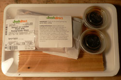
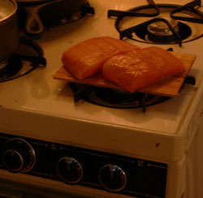
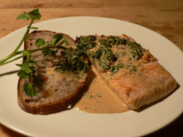
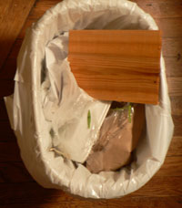

(Free) Salmon with Watercress Sauce
I can’t seem to post here without some gimmicky backstory about the ingredients.

Those of you following along at Eat already know that FreshDirect has crazy freebies all summer long. This week it’s salmon on a “plank.” With marinade! (I see somebody’s been following the tactics of Trader Joe’s.)
But the plank thing is totally weird. FreshDirect is shipping a thin wooden plank to thousands of New Yorkers and telling us to use it “outdoors,” on the “grill.” What? You may as well send me gas for my “car,” or a new blade for my “lawnmower.” Is F.D.’s management office in Omaha?
Ignoring their instructions, I thought I would at least give this plank thing a shot on what we call a grill on this shere island a’ Manhattan…

Ok enough fooling around—Becky is probably slapping a wooden spoon into her thigh right about now.
- 1 1/4 cups heavy cream
- 2 tablespoons chopped fresh tarragon
- 2 tablespoons sweet butter
- 1 tablespoon sunflower oil
- 4 salmon fillets, about 6 ounces each
- 1 garlic clove, crushed
- 1/2 cup dry white wine
- 1 bunch watercress, chopped
- salt and ground black pepper
- lettuce, to serve
First, discard individually packaged (how romantic!) gummy marinade vessels.
Heat the cream until boiling, then remove from heat. Add half the tarragon then set aside. Cook the fish in the oil and butter, then set the fish aside, cook the garlic, then add the wine and reduce. Strain the cream back into the pan, cook for several minutes, then add the remaining ingredients and cook briefly.

(Squint, and that loose stalk of watercress could be a jaunty pile of lettuce.)
I like this recipe because, although it is so ’90s, there ain’t nuthin’ wrong with a lil’ pan-fried salmon in the summer. And the cream sauce only adds to its appeal. Until you’re done and you realize how heavy it all was, and your hands are slippery, and you run to the bathroom to wash them, and your lips too—just to be safe!
And what about the famous plank? I’m afraid it ended its days as so many other flimsy planks will this week…

Comments
Cream sauce makes everything better. And that plank looks like it would have gone up in flames if you’d actually been using it on a grill.
They said to soak it, but I think it might have anyway.
Add a comment